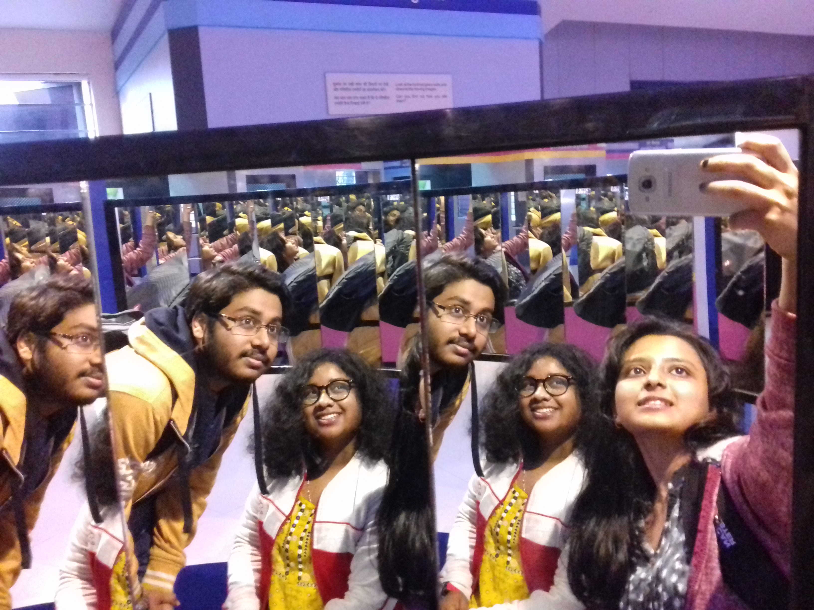

Shevoke

(also Sevok or Sivok) is a town near Siliguri in the Darjeeling District of West Bengal state of India on
the border with Sikkim state. It is a part of Dooars. Many army and BSF camps are located in the area
. The Mahananda Wildlife Sanctuary is situated in this area. National Highway NH31[citation needed]
passes through the town. NH 31A connects this town to Gangtok.
City center

City Centre, SILIGURI has already established as a must-visit destination specially among the Teens
and Youngsters. Shopping, hang-outs, cinema, restaurants etc. all present in the large spacious city
centre. It's clean, well maintained. The unauthorised foodstalls, eateries etc. on the face of CC (on
the way to CC) almost blocked everything leaving just two very narrow passage for walking visitors
to manage entry into the CC area. It's 3 to 4 kms away from SILIGURI, located in city's satellite
township, UTTORAYON, on the national highway, well connected by public transport. However, one
should watch the traffic mobility condition. Sometimes, there's heavy traffic jam originating from the
narrow rail overbridge near Darjeeling More.
Vega circle mall

By far the best mall in Siliguri that i have visited. It has a range of shopping options plus fun and
entertainment zones. There are brands like forever 21, pantaloons, pepe, hush puppies, ritu sharma
etc.. a good number of food chains are also located in the top floors with a food court in it. They
have a fun and entertainment sing called splash which has gaming and bowling alleys.
Sukna forest

the Sukhna Wildlife Sanctuary was formally declared as a protected wildlife sanctuary in March 1998
yet this semi hilly area was already under adequate forest cover. After 1998 more systematic and a
large scale afforestation program was taken up in the catchment areas that resulted in a further
better forest cover developed in the catchment area. The deep forest area that grew in size over five
decades became the home to a large variety of animals and plants. This forest was then designated
as a protected sanctuary; Sukhna Wildlife Sanctuary Sukhna Wildlife Sanctuary has a rich variety of
flora and fauna. It is known to have the most number of sambar found in a group or cluster than
anywhere else in the country. It is home of a large number of birds and reptiles also which include
jungle fowl, various sparrows. The sanctuary contains various variety of trees, shrubs, herbs, grasses
and climbers which include Acacia catechu (Khair), Acacia Arabica (Kikar), Dalbergia sisoo (Shisham),
Anogeissus latifolia (Chhal), Azadirachta indica (Neem), Butea frondosa (Dhakk).
Science city

North Bengal Science Centre, Siliguri is a vibrant science centre under National Council of Science
Museums, Ministry of Culture, Govt. of India working for dissemination of science to all strata of
society so that the benefits of scientific advancements may reach to each and everyone to ensure
the development of society in true sense. With its continuous efforts for inclusive science
communication, since it inception on 17th August, 1997; it has found deep penetration in the society
with more than 2.7 Lac visitors from far reaching area of North Bengal as well as from neighboring
states and countries such as Bihar, Bhutan, Nepal etc.
Iskcon temple

Find your inner peace with the outstanding work of art and sculptures pantings. Thrills your soul
when u enter the path of "hell and the understanding of punishment for the sin".The rath of Krishna
in the lovely garden with amazing blossom is an added apple of the eye. Must visit.